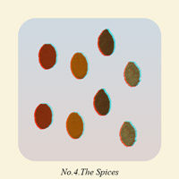

This is the story of one egg chosen by fate to be the catalyst for one of the most popular fast-food chains on the planet. The life of the egg is detailed through eight pictures as we see it grow from an egg with unlimited potential, to another cog in the machine that is capitalism.
The egg came first. Or did it? Either way as soon as this egg was laid one thing was sure. It would have no control over it’s future. But of course it had no way of knowing that. If it knew what laid ahead, maybe it would’ve stayed inside permanently. But wait, wouldn’t that mean the chicken came first.For a while, the chicken was free to roam across the vast space of the farm. But only for a while of course, after that it was back to the cage for the night. Still, it was a whole lot better than what was to come. The chicken didn’t know it at the time, but its days were numbered.Then came an old man from Kentucky. His gentle face and friendly manner betrayed his true intentions. As soon as the egg had been laid, the old man had decided its fate. The days of roaming the farm, pecking at the dirt without a care in the world were over. The chicken had taken it’s last breath.

The old man had tried hundreds of combinations throughout his life, but this one was by far the best. Eleven was the magic number. Just enough of each spice, without one overpowering the others. It was his best creation yet. And one lucky chicken would be the first to test just how well the new combination would fare.The oil had to be at the perfect temperature. Too hot and the outside would burn while the centre remained uncooked. Too cold and the whole endeavour would be for nothing as nobody would want to eat a chicken drenched in oil. In some ways this was the most crucial step. There was no going back from here.The steam emanating as the chicken rested from the heat was enough to make the old man’s mouth water. He knew even before taking a single bite, it was perfection. Every sense was intrigued. The eyes locked in on the golden crust, the ears on the oil still crackling in the background, a beautiful aroma rose into the man’s nose as the warm steam continued to rise gently towards the ceiling.It took seconds for the old man to devour the first piece, then he picked another, then another. Before he knew it there was nothing left. What started out as the promise of anything, now lay in front of the old man as a pile of bones. Such is life.All that was left to do was to wipe his hands and marvel at what he’d just created. From now on his little experiment would bring joy and diabetes to millions around the world, long after the old man was gone. The little egg had done its job. More so than it could ever know.
The collection of images is owned by Colonel Harland David Sanders’ estate. The Colonel made sure to document his process by personally photographing each stage of the creation of his now world-famous recipe. The collection of full-size images can be downloaded by pressing the button below.